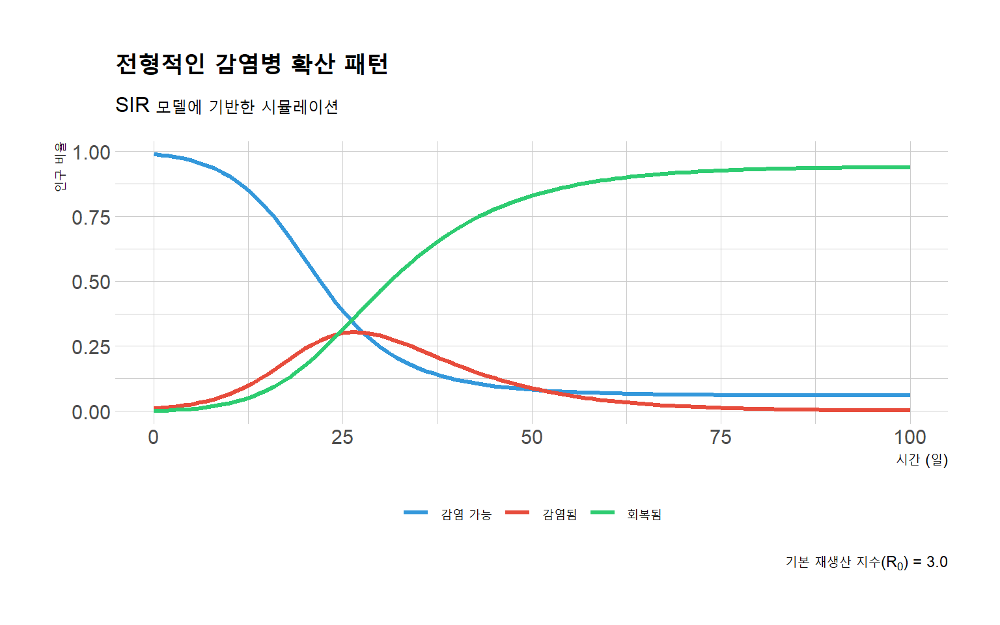

Code
library(deSolve)
library(ggplot2)
library(tidyr)
library(hrbrthemes)
# SIR 모델 정의
sir_model <- function(time, state, parameters) {
with(as.list(c(state, parameters)), {
dS <- -beta * S * I
dI <- beta * S * I - gamma * I
dR <- gamma * I
return(list(c(dS, dI, dR)))
})
}
# 매개변수 설정
parameters <- c(beta = 0.3, gamma = 0.1)
initial_state <- c(S = 0.99, I = 0.01, R = 0.0)
times <- seq(0, 100, by = 1)
# 모델 실행
output <- as.data.frame(ode(y = initial_state, times = times,
func = sir_model, parms = parameters))
# 데이터 형식 변환
output_long <- pivot_longer(output, cols = c("S", "I", "R"),
names_to = "상태", values_to = "비율")
# 표시할 레이블 설정
output_long$상태 <- factor(output_long$상태,
levels = c("S", "I", "R"),
labels = c("감염 가능", "감염됨", "회복됨"))
# 그래프 그리기
ggplot(output_long, aes(x = time, y = 비율, color = 상태)) +
geom_line(size = 1.2) +
labs(title = "전형적인 감염병 확산 패턴",
subtitle = "SIR 모델에 기반한 시뮬레이션",
x = "시간 (일)",
y = "인구 비율",
caption = expression(paste("기본 재생산 지수(", R[0], ") = 3.0"))) +
scale_color_manual(values = c("감염 가능" = "#3498db",
"감염됨" = "#e74c3c",
"회복됨" = "#2ecc71")) +
theme_ipsum_rc() +
theme(legend.position = "bottom",
legend.title = element_blank(),
plot.title = element_text(face = "bold", size = 16),
plot.subtitle = element_text(size = 12),
axis.title = element_text(size = 12))
Code
# annotate("text", x = 22, y = 0.25, label = "최대 감염자 수",
# color = "#e74c3c", fontface = "bold") +
# annotate("segment", x = 22, y = 0.23, xend = 18, yend = 0.19,
# arrow = arrow(length = unit(0.3, "cm")), color = "#e74c3c")